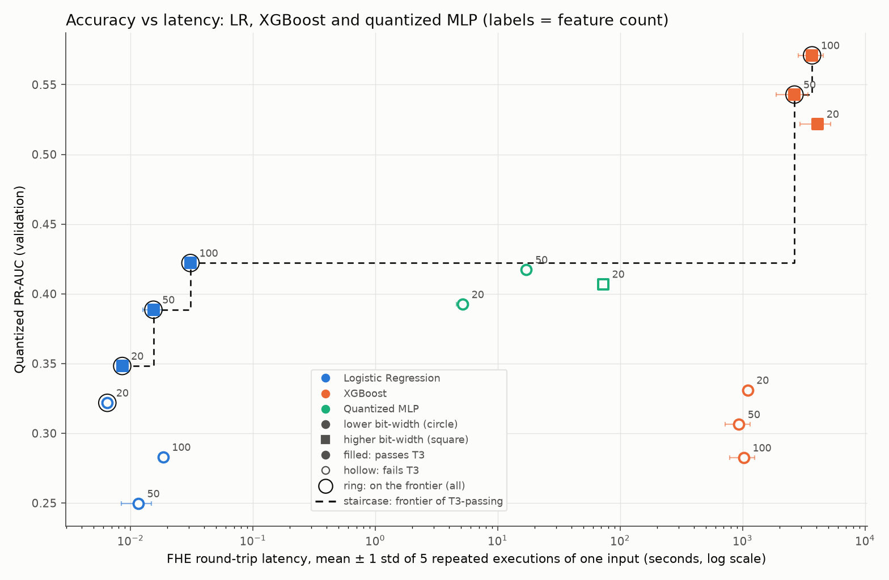

Ciphraud
Fraud scoring on encrypted transactions. A client encrypts the features, a server evaluates the model on the ciphertext without the secret key, and the client decrypts the result. This page shows a recording of the real system running, then every measured result, including the ones that failed.
Research project on the IEEE-CIS fraud dataset using Concrete-ML. Not a product and not production-ready.
1. It runs: a recorded encrypted round trip
This is one real run of the existing logistic-regression client and server (20 features, 16-bit quantization), captured with its real timing. The client and the server are separate processes talking over loopback HTTP. Nothing in the recording was edited, generated or re-timed.
Plain-text output of the same run: lr_roundtrip.log · recording file: lr_roundtrip.cast.
What the recording shows
- The client generates the keys. The secret key stays in client memory; only the evaluation (public) keys are uploaded.
- One transaction is quantized and encrypted on the client. The server only ever receives the ciphertext.
- The server evaluates the model on the ciphertext and returns an encrypted result.
- The client decrypts and gets the integer
-214667949, which equals the plaintext-quantized model, the Concrete simulation and the value recorded in the earlier validation phase. - A client-side audit of every request body confirms each one was evaluation keys or an input ciphertext.
Scope of this evidence: one request on one fixed validation row, over loopback, run from the committed deployment artifacts. It is a functional demonstration, not a benchmark and not a statement about a network deployment. The committed Phase 10 record contains further round trips: LR 7 of 7 and MLP 7 of 7 exact, and XGBoost one request, exact.
2. Results for all 18 configurations
Three model families, three feature tiers (top 20, 50 and 100 features ranked by XGBoost total gain), two bit-widths each. PR-AUC is the headline metric because only 3.4% of transactions are fraud. Latency is the mean of 5 repeated executions of one input on a single machine; it is not a throughput figure. Click a column header to sort.
Validation versus held-out test
The models, tiers and thresholds were chosen on validation data. The test partition was then scored once, after everything was frozen. Every configuration scored lower on test. For XGBoost the three feature tiers are statistically indistinguishable on test, so the validation advantage of more features did not hold up.
Accuracy versus latency

results/phase9_mlp/pareto/ (validation PR-AUC, copied unchanged). Hollow markers fail the plaintext-agreement gate. LR costs milliseconds; XGBoost reaches higher PR-AUC for roughly 105 times the latency.3. What is and is not claimed
The one security claim. An honest, hardware-untrusted inference server cannot recover the plaintext transaction features or the plaintext fraud decision from the protected inference data it receives.
Source: docs/architecture.md. Nothing on this page claims more than that.
The server knows
- The ciphertexts, the plaintext model parameters, and request timing, size and frequency.
Out of scope
- Model confidentiality, and timing, volume or ciphertext-size side channels.
- A malicious server tampering with results (no verifiable computation).
- Side channels on the client machine, poisoning of the training data, multi-party collaboration, and any regulatory compliance.
- TLS and authentication: the demo server has neither and is meant for loopback only.
Alternatives
If the hardware can be trusted, a trusted execution environment is far faster than FHE. If several institutions must compute together, multi-party computation is the better fit. FHE is not automatically the right choice for every threat model.
4. Limitations
- XGBoost is slow. 931 to 4,099 s per encrypted request here, and the one client/server XGBoost run needed the WSL memory limit raised to 5 GB after two attempts stopped on the memory guard. A published figure of about 6 ms for encrypted XGBoost was not reproduced; the reason is unknown.
- 8-bit quantization failed the accuracy gate for every LR and XGBoost configuration. XGBoost at 15 and 16 bits does not compile.
- Three MLP configurations were infeasible because their key material (3.2 to 4.8 GB) exceeded the memory limit.
- Single machine, loopback only. No WAN measurements, no concurrency, no TLS or authentication, and no production claim.
- Label access. An unexplained access-time change on the sealed test-label file was later explained as most plausibly my own metadata inspection. That explanation is strong but not certain, because no OS audit log exists to confirm it. See
docs/test_evaluation_protocol.md, section 11. - Docker was validated for LR and MLP only; XGBoost was not containerized.
5. Verify it yourself
Every number above is read from a committed file; none is recomputed here. The frozen test evaluation was run once, and its outputs are hash-pinned:
The code, configs, per-configuration provenance and the full write-up are in the repository: report.md, docs/research.md, docs/client_server.md. The README has a short Docker reproduction path for the LR server.